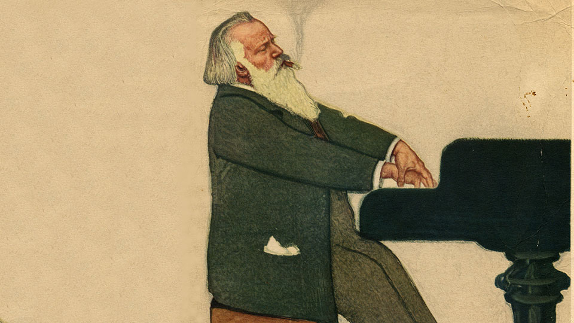

Quinn Coleman
Blah blah blah. Blah blah blah. Blah blah blah. Blah blah blah. Blah blah blah. Blah blah blah. Blah blah blah. Blah blah blah. Blah blah blah. Blah blah blah. Blah blah blah. Blah blah blah. Blah blah blah. Blah blah blah. Blah blah blah. Blah blah blah. Blah blah blah. Blah blah blah. Blah blah blah. Blah blah blah.
Designing for Beginner Musicians
Restoring Music with Machine Learning
There are many people who pick up an instrument at some point in their life, and later find themselves not playing it anymore. Music education games, most popularly Rocksmith, aim to solve this by making it funner and quicker to learn how to play an instrument. I have observed that Rocksmith isn’t meeting the goals for anyone who picks up an instrument other than guitar. Because of this, my goal is to design a music education game for users who want to learn any instrument (one that plays musical pitches). I also narrow my goal by designing only the gameplay experience.
In 1889, a representative of Thomas Edison recorded Johannes Brahms playing a piano arrangement of his piece titled “Hungarian Dance No. 1”. This recording acts as a window into how musical masters played in the 19th century. Yet, due to years of damage on the original recording medium of a wax cylinder, it was un-listenable by the time it was digitized into WAV format. This thesis presents machine learning approaches to an audio restoration system for historic music, which aims to convert this poor-quality Brahms piano recording into a higher quality one. Digital signal processing is paired with two machine learning approaches: non-negative matrix factorization and deep neural networks. Our results show the advantages and disadvantages of our approaches, when we compare them to a benchmark restoration of the same recording made by the Center for Computer Research in Music and Acoustics at Stanford University. They also show how this system provides the restoration potential for a wide range of historic music artifacts like this recording, requiring minimal overhead made possible by machine learning. Finally, we go into possible future improvements to these approaches.
